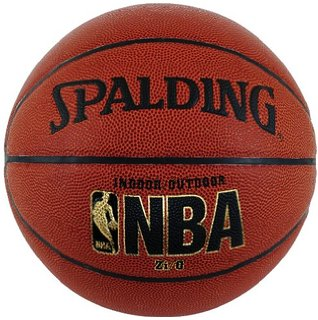

Teamwork is the beauty of basketball. Five people working as one. You become selfless.~ Mike Krzyzewski Head coach of the Duke Blue Devils Men's basketball team
Welcome to the team! My name is Kyle Harrison and I'll be your Head Coach for the season. You can call me Coach or Coach K. I am very excited for what we will be doing this season and seeing you all improve as individual players and as a team. My goal for this team is simple, I plan to use your love for the game of basketball by teaching you the fundamentals such as passing, dribbling, shooting, defense, and communication. As a coach, I want to help each of you build on your skills, so that you can take your game to the next level.
To tell you a little bit about myself, I am 23 years old and I attend the University of Georgia. I've been playing basketball since I was 7. I played recreational, I played middle school and in high school at Franklin County High school. I did not have the opportunity to play colllegiate basketball, so I switched to playing football so that I could have a better chance of playing a sport at the next level. Changing sports for me did not mean I lost passion for the game but instead gaining more appreciaton for it and loving it even more once I was no longer playing. Thus the reasoning behind getting back into it. I follow a lot of teams. My favorite teams are Duke and the Los Angelos Lakers, with or without Kobe. I'm a fan of teams like the Warriors and the Spurs as well because of how well they play as a team on both sides of the ball and how they support one another. They do a lot of things I want to do as your coach, so I hope knowing that excites you because you could be the next Steph Curry or Kevin Durant on this team. I can't wait to get this seasoon started! I cant wait to meet you guys at practice! Let's Go!

| Practice | Date |
|---|---|
| 1 | November 19 |